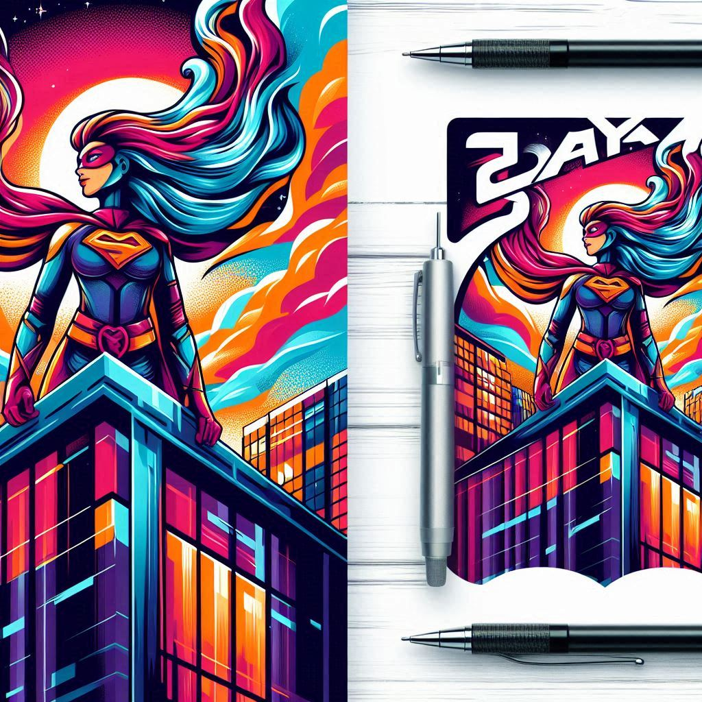
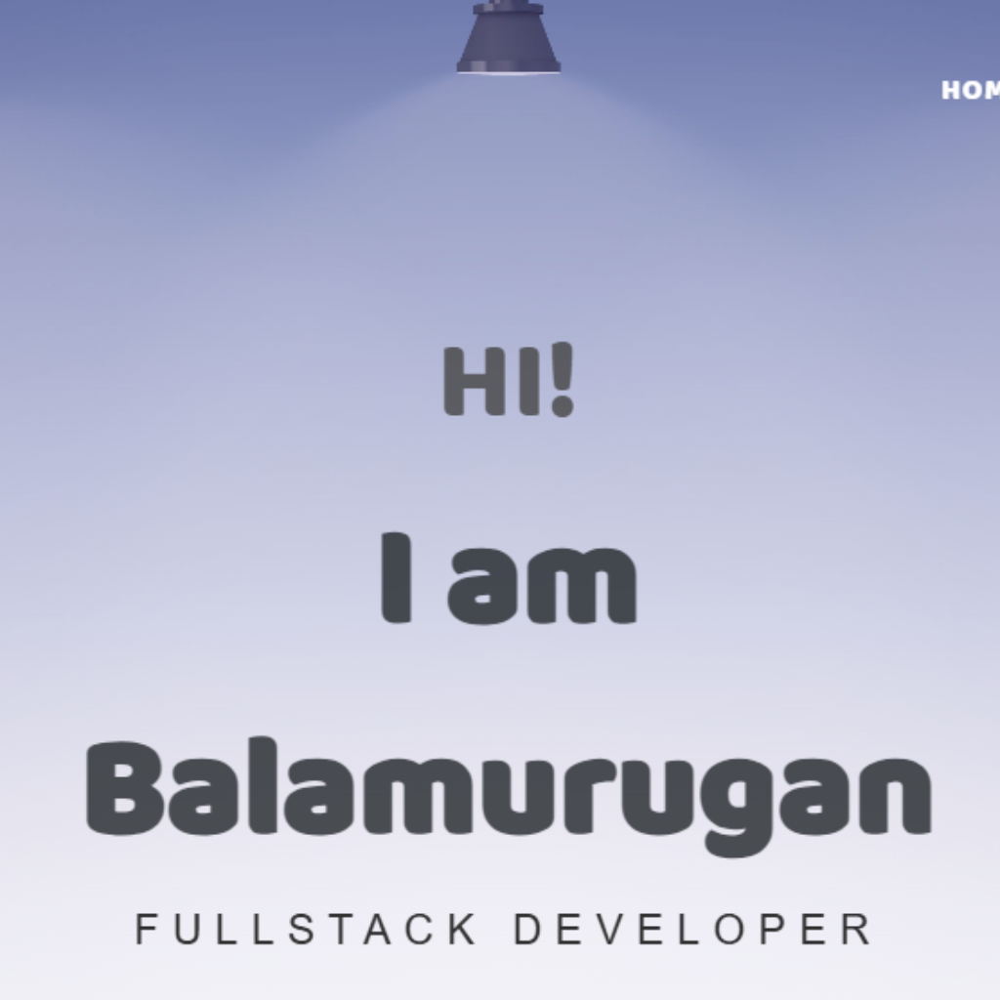
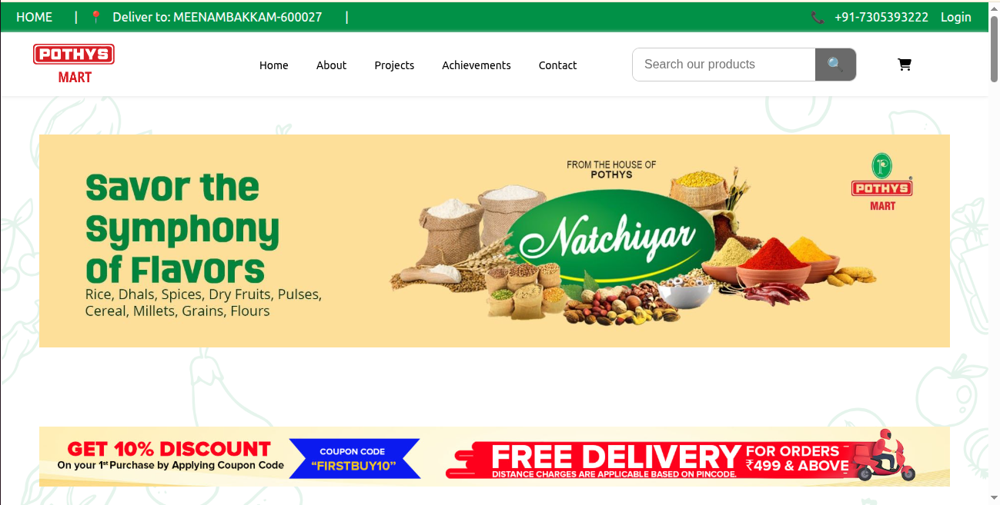
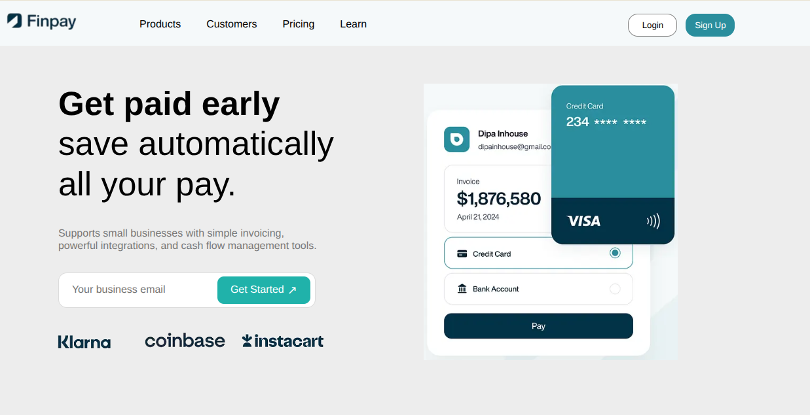
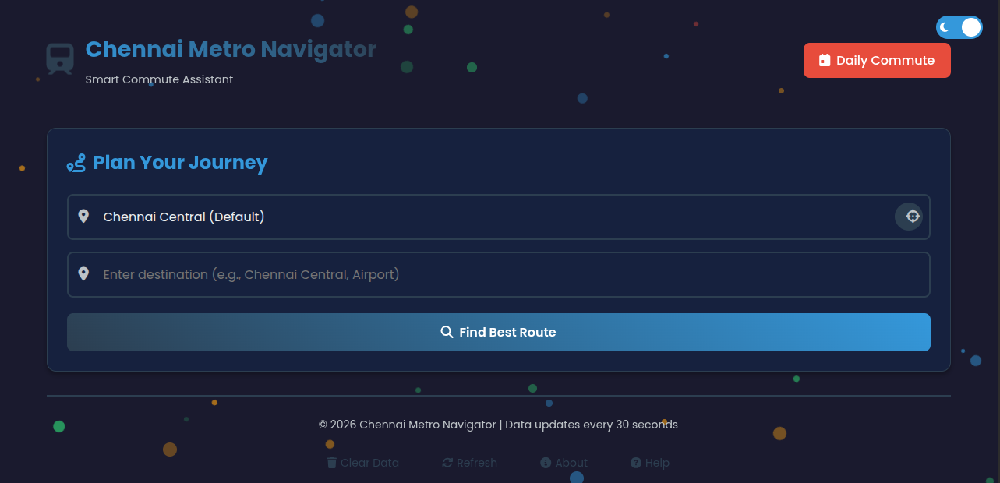

Projects

Saya Comics
Crafted a dynamic comic showcase platform using HTML, CSS, JavaScript, highlighting creativity and interactive web development skills.View Project
View on GitHub
Personal AI Voice Assistant
Built an AI Voice Assistant enabling smart tasks like web browsing, app launching, and voice interactions.
View on GitHub
Portfolio
I’m Balamurugan, a Fullstack Developer passionate about building responsive, dynamic web applications and turning complex ideas into seamless, user-friendly digital experiences.
View on GitHub
Pothysmart Website
Cloned the Pothysmart landing page using HTML, CSS, and a bit of JavaScript for the hamburger menu. Built a responsive, pixel-perfect design.View Project
View on GitHub
Finpay
Cloned a fintech landing page using only HTML and CSS. Implemented structured sections and consistent styling to achieve a polished, user-friendly interface.View Project
View on GitHub
Metro Navigator
Built a smart Metro Navigation system that helps users find stations, routes, train timings, connections, and commute information efficiently.View Project
View on GitHub